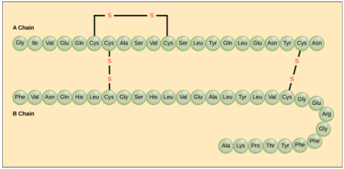
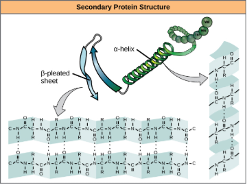
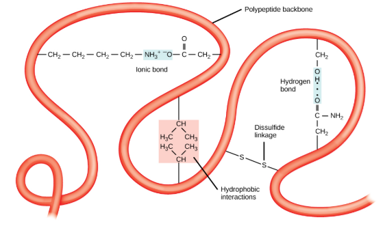
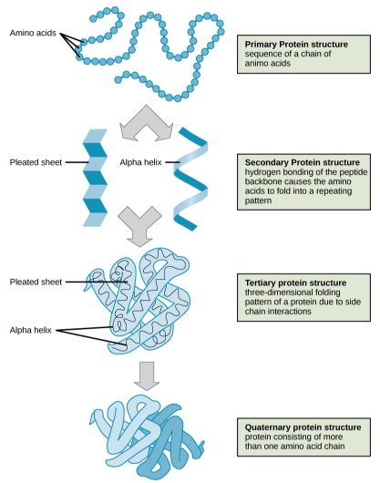

Protein 3D structure lesson
Primary Structure
The unique sequence of amino acids in a polypeptide chain is its primary structure. This is determined by the gene (DNA) that encodes it. Polypeptide bonds link each amino acid.
Secondary Structure
Secondary structure is the result of the local foldings of the polypeptide. There are two types of folding α-helix (coiled like structure) and β-sheet (sheet like) which is connected by hydrogen bonds. The α-helix and β-pleated sheet are secondary structures of proteins that form because of hydrogen bonding between carbonyl and amino groups in the peptide backbone. Entirely depends on primary structure's nature of R-groups.
Tertiary Structure
Tertiary structure is due to the chemical bonds on the polypeptide chain. It is primarily due to the R groups on each of the amino acids which counteracts the hydrogen bonds in the secondary structure. These interactions are listed below:
Covalent Bonds: The only covalent bounds in protien folding are disulfide linkages
Ionic Bonds: Found between R groups whoose charges attract or repeal each other.
Hydrophobic: Found in polar side chains, usally in the interior of the protien structures. Ex: OH, SH, COO-, NH3+
Hydrophilic: Found in non-polar side chains, usally in the exterior of the protien structures. Ex: CH3
Van der Waals Forces: Found between closely packed molecules
Above image shows all bonds involved in tertiary structure
Quaternary Structure
Quaternary structure is found in protiens formed from several polypeptides called subunits. Quaternary structure exhibits all the same bonds and interactions as tertiary structure between different subunits. Examples of protiens with quaternary structure include RuBisCo, ATP Synthase, and Hemoglobin.
Protein Denaturation & Renaturation
 Denaturation occurs when a protien is subjected to a changes in temperature, ph, salt concentration, or ion
concentation, its protien structure may change shape while maintaining primary structure. Ph will affect the H+ and
OH- concentrations which will affect the strength of H and ionic bonds. High enough temperatures can break all kind
of bonds. Finnally the salt or ion concentration changes will affect ionic and hydrogen bonds.
Denaturation occurs when a protien is subjected to a changes in temperature, ph, salt concentration, or ion
concentation, its protien structure may change shape while maintaining primary structure. Ph will affect the H+ and
OH- concentrations which will affect the strength of H and ionic bonds. High enough temperatures can break all kind
of bonds. Finnally the salt or ion concentration changes will affect ionic and hydrogen bonds.
Denaturation is often reversible as the primary structure of the protiens is left unchanged. If the cause the the denaturation is removed, the protien will go through renaturation and gain its original shape back.